Сетевые технологии
Адресация IPv4 и IPv6. Настройка маршрутизации
Шихалиева Зурият Арсеновна
Российский университет дружбы народов, Москва,
Россия
19 декабря 2025
Основная цель
Изучить принципы адресации и маршрутизации в сетях IPv4 и IPv6, а
также механизм организации туннеля IPv6 поверх IPv4 с использованием
маршрутизаторов VyOS и среды моделирования GNS3.
Общая схема сети
Две изолированные IPv6-сети
Транзитная IPv4-сеть между ними
Три маршрутизатора VyOS
Два оконечных узла VPCS
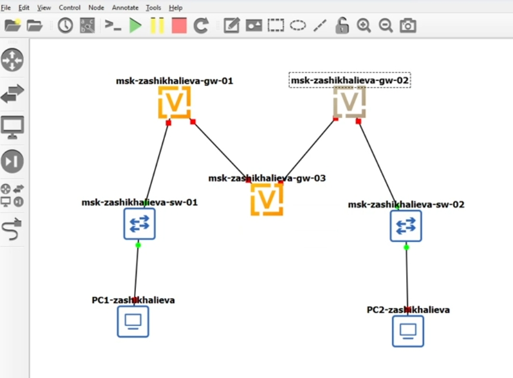
Топология сети
Адресация IPv6 на оконечных узлах
Настройка PC1
IPv6-адрес: 1000::a/64
Автоматическое получение шлюза через Router Advertisement
Проверка параметров IPv6
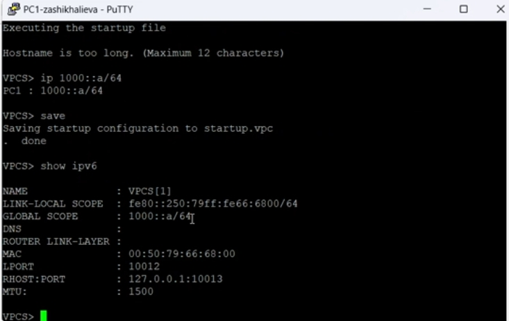
PC1 IPv6
Настройка PC2
IPv6-адрес: 1002::a/64
Получение link-local и глобального адресов
Проверка конфигурации
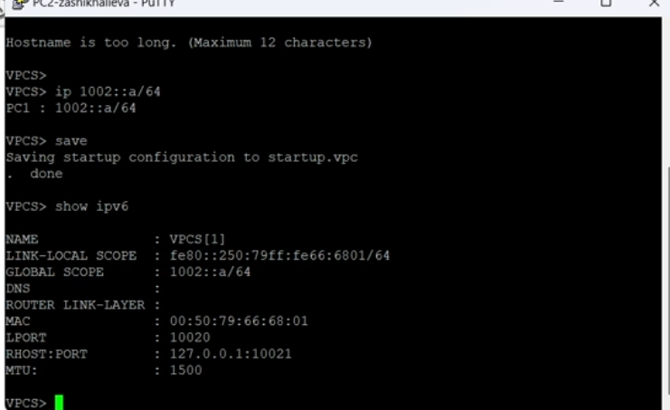
PC2 IPv6
Настройка граничных маршрутизаторов
Маршрутизатор msk-zashikhalieva-gw-01
IPv6: 1000::1/64 (локальная сеть PC1)
IPv4: 10.0.0.1/8
Включение Router Advertisement
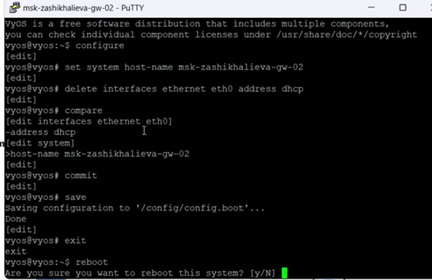
gw-01 config
Маршрутизатор msk-zashikhalieva-gw-02
IPv6: 1002::1/64 (локальная сеть PC2)
IPv4: 20.0.0.2/8
Включение Router Advertisement
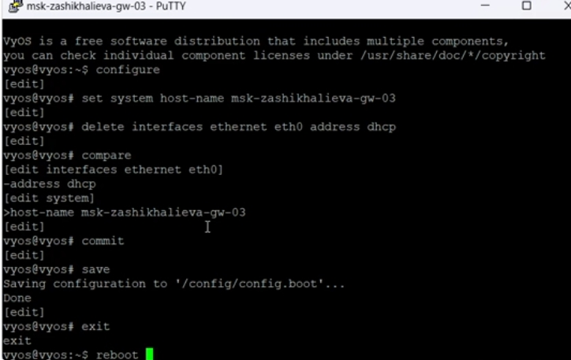
gw-02 config
Транзитный маршрутизатор msk-zashikhalieva-gw-03
IPv4: 10.0.0.2/8 и 20.0.0.1/8
Обеспечение связи между IPv4-сетями
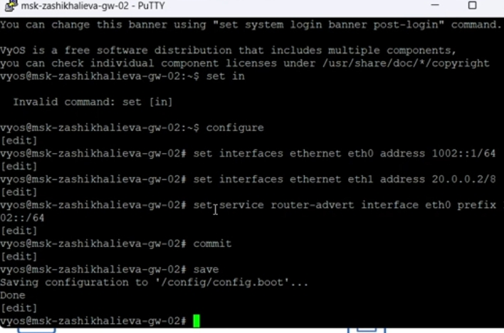
gw-03 config
Проверка IPv4-связности (до маршрутизации)
Результаты проверки
Доступна сеть 10.0.0.0/8
Сеть 20.0.0.0/8 недостижима
Причина — отсутствие маршрутов
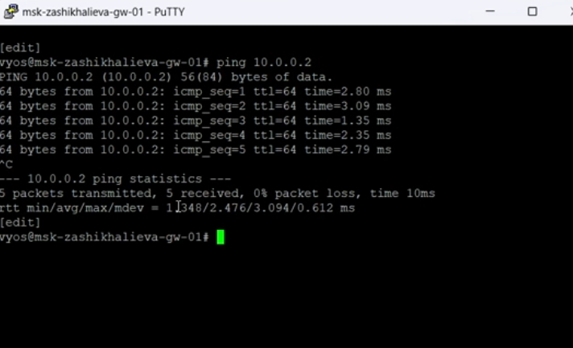
IPv4 ping fail
Динамическая маршрутизация IPv4 (RIP)
Настройка RIP
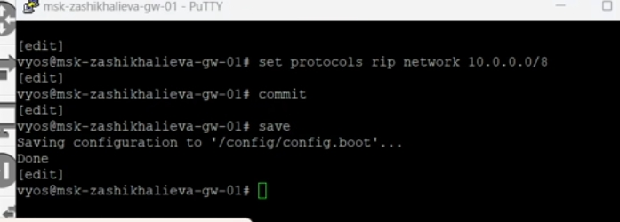
RIP gw-01
Настройка RIP
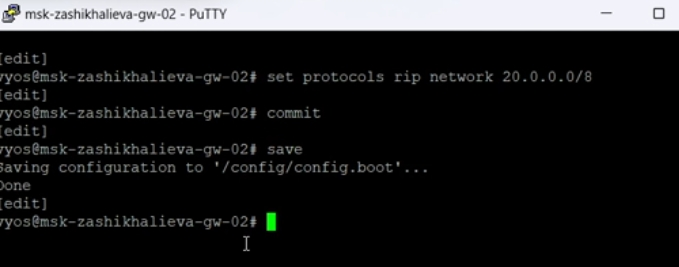
RIP gw-03
RIP и ICMP
RIP-пакеты на 224.0.0.9
ICMP Echo Request / Reply между сетями
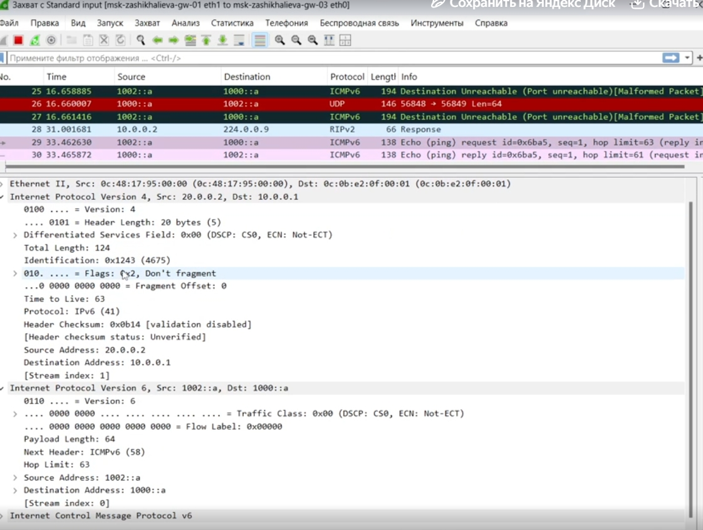
RIP + ICMP
Туннелирование IPv6 поверх IPv4
Создание туннеля 6in4
Тип туннеля: SIT
gw-01 ↔︎ gw-02
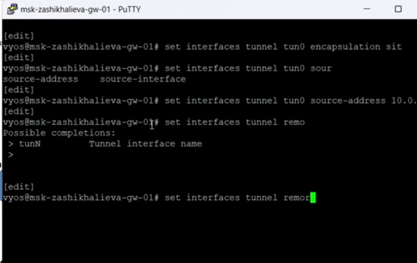
Tunnel gw-01
Создание туннеля 6in4
IPv6-сеть туннеля: 1001::/64
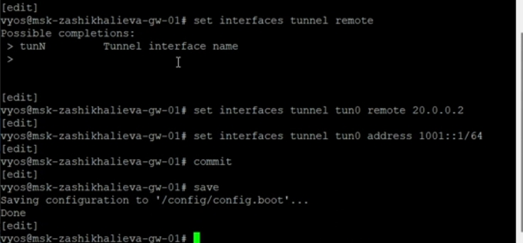
Tunnel gw-02
Статическая маршрутизация IPv6
Настройка маршрутов
gw-01 → 1002::/64 через
1001::2
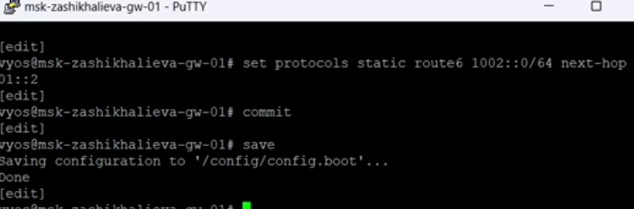
IPv6 route gw-01
Настройка маршрутов
gw-02 → 1000::/64 через
1001::1
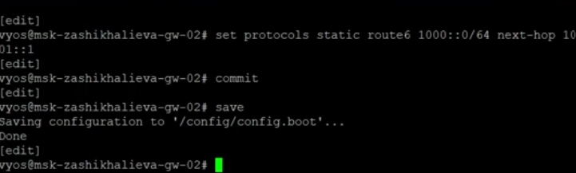
IPv6 route gw-02
Проверка IPv6-доступности
PC1 → PC2
Ping успешен
Traceroute проходит через туннель
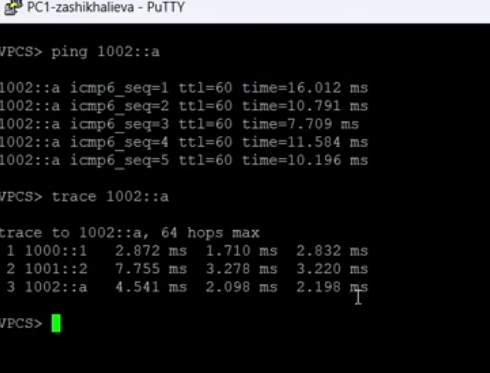
PC1 ping6
PC2 → PC1
Двусторонняя IPv6-связность
Корректная маршрутизация
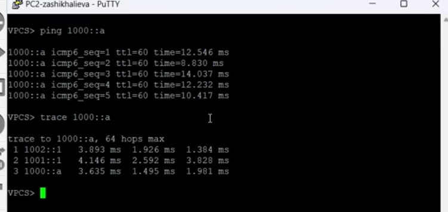
PC2 ping6
Анализ туннельного трафика
IPv6 внутри IPv4
IPv4-пакеты с protocol = 41
Внутри — ICMPv6
Адреса 1000::a ↔︎ 1002::a
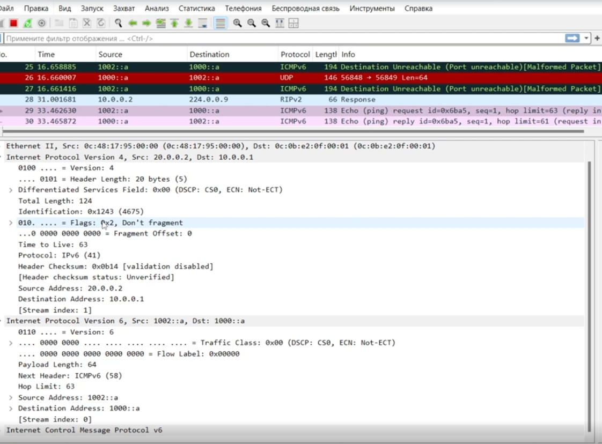
IPv6 in IPv4
Основные результаты
Построена модель сети IPv4/IPv6 в GNS3
Настроена адресация IPv6 и IPv4
Реализована динамическая маршрутизация IPv4 (RIP)
Создан туннель IPv6 поверх IPv4 (6in4)
Настроена статическая маршрутизация IPv6
Подтверждена работоспособность сети и туннеля
Проанализирована инкапсуляция IPv6-трафика в IPv4